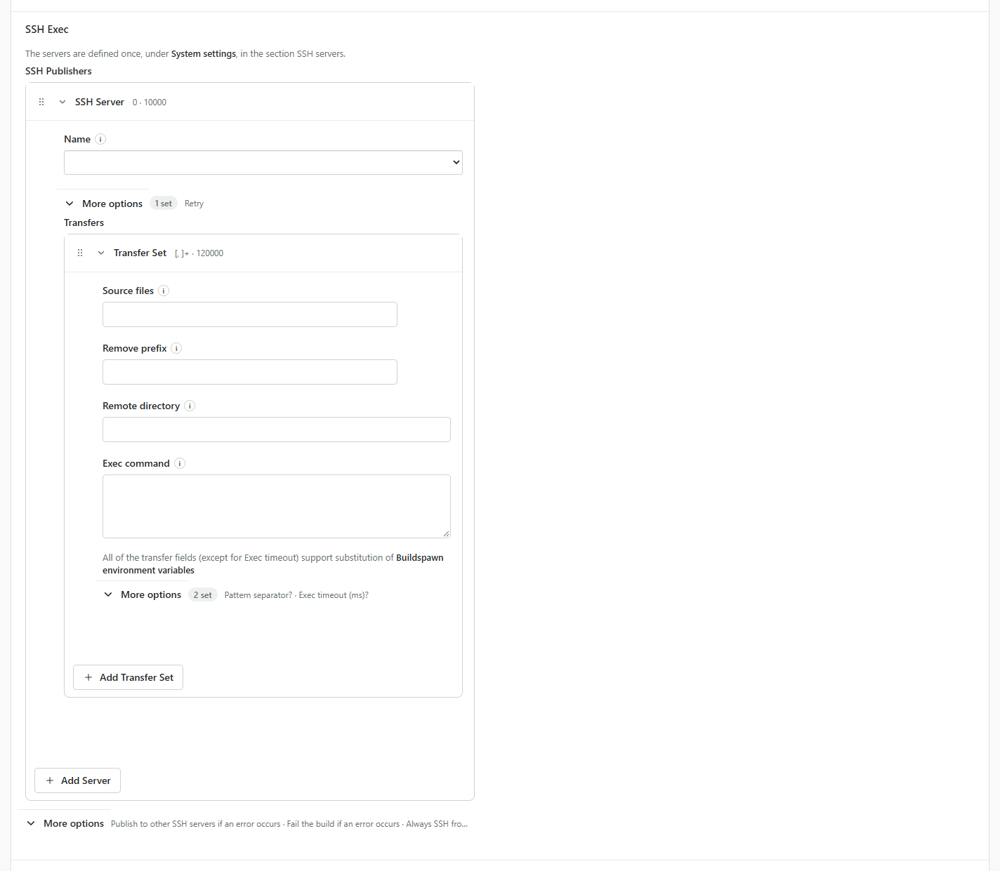

SSH Exec
Runs commands on a remote server over SSH. The servers and their keys are defined once, under System settings.
When to use it
Use it to restart a game server, run a deploy script on a Linux box, or unpack an upload.
How to set it up
- Open the build configuration and click Settings › Build Steps.
- Click Add build step. Type
SSH Execin Filter step types if you like, then click the SSH Exec tile (group Upload and deploy). - Type a Step name, for example
Restart server. - Fill in the fields described below.
- Optional: set Execute step, Conditions and Retry on failure. See The steps list and the step editor.
- Click Save.

Every field
| Field | What it does | Default | Example |
|---|---|---|---|
| Name (SSH Server) | The server to use, chosen from the servers defined once under Settings › System. A server marked [No Exec] cannot run commands. | First server | build-linux |
| Verbose output in console | More detail in the log. | Off | On |
| Credentials | Optional credentials to use instead of the server's own. | Server's own | |
| Retry (Retries, Delay) | Try again when a transfer fails: how many times and the delay in milliseconds. | Off | 3 retries, 10000 ms |
| Label | Only publish to this server when the label matches. For parameterised publishing. | None | |
| Publish to other SSH servers if an error occurs | Keep going with the other servers when one fails. | Off | On |
| Fail the build if an error occurs | Fail the step when a transfer or command fails. | On | On |
| Always SSH from master | Make the transfer from the server instead of from the agent. | Off | Off |
| Exec command | The command to run on the remote server. Environment variables of the build can be used. | Empty (required) | sudo systemctl restart gameserver |
| Exec timeout (ms) (More options) | Time limit for the command, in milliseconds. 0 turns it off. | Empty | 120000 |
| Exec in pty (More options) | Runs the command in a pseudo terminal. This lets sudo work when the server's requiretty setting is on. | Off | On |
| Exec using Agent Forwarding (More options) | Forward the SSH agent to the command. | Off | Off |
| Use SFTP for Exec (More options) | Run the command through SFTP instead of the normal exec channel. | Off | Off |
A worked example
Restart the test server after an upload. Step name Restart server, Name build-linux, Exec command sudo systemctl restart gameserver, tick Exec in pty.
What you see when it runs
The console says it is connecting to the configuration, runs the command, prints its output and says it is disconnecting.
Problems and fixes
| Problem | What to do |
|---|---|
| The server list is empty | An administrator must add a server under Settings › System. See Global connections. |
| Failed to find configuration named … | The server was removed or renamed. Pick another. |
sudo says it needs a tty | Tick Exec in pty. |